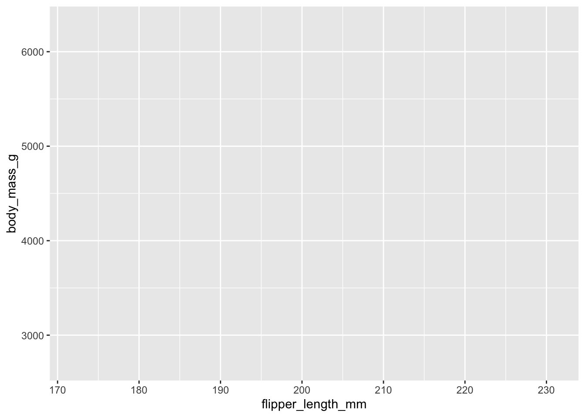
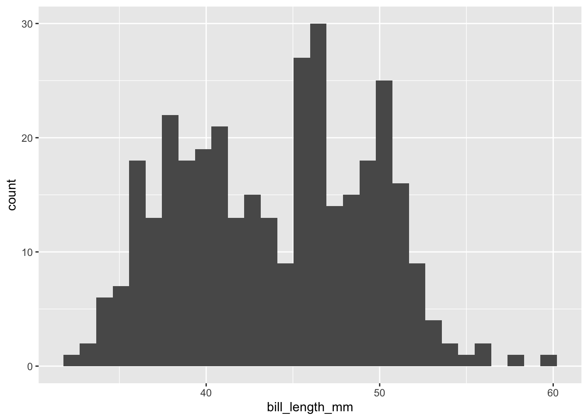
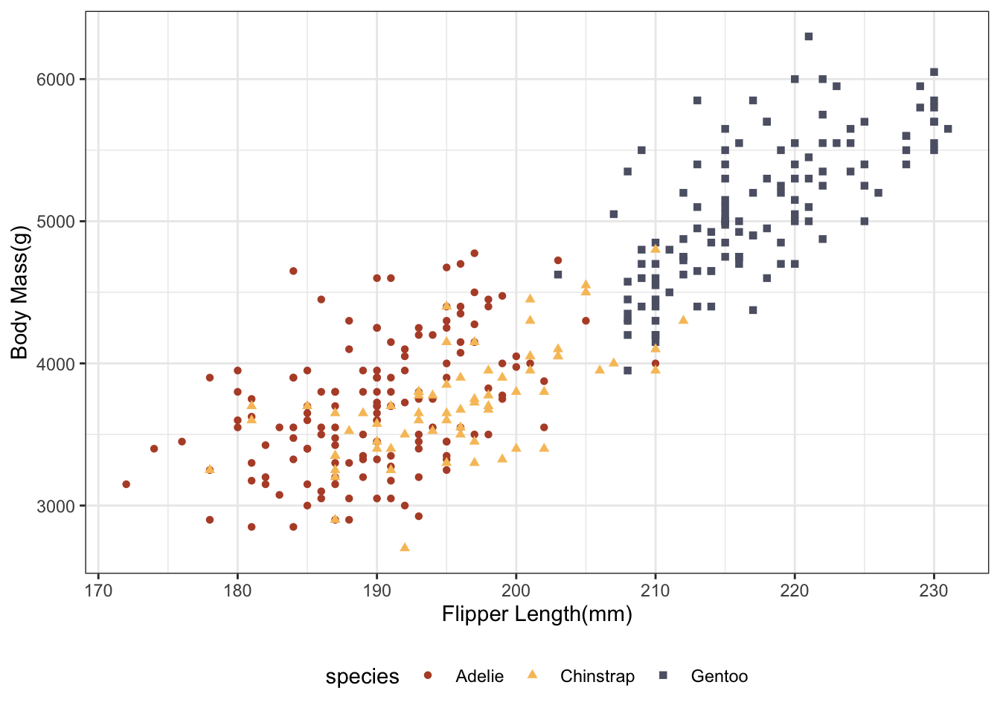

library(tidyverse)
library(MetBrewer)
library(palmerpenguins)6 Data Vizsualization
Data visualization is an in-demand skill because the ability to communicate concepts through data visualization is way more powerful and intuitive than presenting them with regression coefficients. It is also just as much an art as it is programming, which makes it fun. People are good at seeing patterns in stuff so it will be helpful to get a basic grasp of the most popular tidyverse package ggplot. ggplot is everywhere in the wild and has a bunch of user-written extensions I will load in one of them along with the tidyverse and the palmerpenguins package.
gg in ggplot stands for the grammar of graphics. This will make more sense after we walk through how to make plots with ggplot.
| Component | Function | Explanation |
|---|---|---|
| Data |
ggplot(data)
|
The raw data that you want to visualise. |
| Aesthetics |
aes()
|
Aesthetic mappings between variables and visual properties. |
| Geometries |
geom_*()
|
The geometric shapes representing the data. |
| Statistics |
stat_*()
|
The statistical transformations applied to the data. |
| Scales |
scale_*()
|
Maps between the data and the aesthetic dimensions. |
| Coordinate System |
coord_*()
|
Maps data into the plane of the data rectangle. |
| Facets |
facet_*()
|
The arrangement of the data into a grid of plots. |
| Visual Themes |
theme() and theme_*()
|
The overall visual defaults of a plot. |
Here is a basic scatter plot in ggplot. Let’s say I want a scatter plot looking at the relationship between flipper length and body mass. aes tells ggplot what columns in the dataset we want to plot. geom_point tells ggplot what kind of plot we want. ggplot works kind of like building a cake we add layers to it. So if we did
ggplot(data = penguins, aes(x = flipper_length_mm, y = body_mass_g))
We get a blank plot. To add a layer you use +
ggplot() +
geom_point(data = penguins,
aes(x = flipper_length_mm,
y = body_mass_g))
To fit everything into the code blocks on the screen I have done.
ggplot() +
geom_point(data = penguins,
aes(x = flipper_length_mm,
y = body_mass_g))You don’t have to do this. Nothing terrible happens if you do, but I want to save you some unnecessary keystrokes. Doing
ggplot(penguings, aes(x = body_mass_g, y = flipper_length_mm))It is totally fine.
If we want a histogram to show the distribution of bill length, we would change the geom and the aes
ggplot() +
geom_histogram(data = penguins,
aes(x = bill_length_mm))
If we want to add another kind of plot to our figure, we can add another layer to our cake.
ggplot() +
geom_point(data = penguins,
aes(x = flipper_length_mm,
y = body_mass_g)) +
geom_smooth(data = penguins,
aes(x = flipper_length_mm,
y = body_mass_g)) # adds a best fit lineWe want to give our audience a better understanding of what the variables are, so we should add more informative labels.
ggplot() +
geom_point( data = penguins,
aes(x = flipper_length_mm, y = body_mass_g)) +
geom_smooth(data = penguins,
aes(x = flipper_length_mm, y = body_mass_g)) +
labs(x = "Flipper Length(mm)", y = "Body Mass(g)")
So far, we have only done stuff working within aes. Here is one of the most common mistakes when working in ggplot.
ggplot() +
geom_point(data = penguins,
aes(x = flipper_length_mm,
y = body_mass_g,
color = "blue")) +
labs(x = "Flipper Length(mm)", y = "Body Mass(g)")I wanted to change the color of the dots. However, I did this in the aes(). If you look back, you will remember that aes will look to put stuff in your plots based on columns in your dataset. So to change the look of your plot, you need to do it outside of aes().
ggplot() +
geom_point(data = penguins,
aes(x = flipper_length_mm,
y = body_mass_g), color = "blue") +
labs(x = "Flipper Length(mm)", y = "Body Mass(g)")Notice that we have been working within the various geoms. This gets tedious very quickly when we have more than one geom. When you work inside the individual geoms this is called working locally, meaning the other geoms do not inherit any of the stuff in the other. The good news is that there is a global option where each geom inherits the data and aesthetics from the global options, and you do not need to specify them.
ggplot(penguins,
aes(x = flipper_length_mm,
y = body_mass_g)) +
geom_point() +
geom_smooth() +
labs(x = "Flipper Length(mm)", y = "Body Mass(g)")Notice that we did not have to tell the geoms anything. If we wanted to specify more specific options for each geom, we can.
In the case of the penguins dataset, there are subgroups that tell an important story about the relationship between flipper length and body mass. We can visualize those easily.
ggplot(penguins,
aes(x = flipper_length_mm,
y = body_mass_g,
color = species,
shape = species)) +
geom_point() +
labs(x = "Flipper Length(mm)", y = "Body Mass(g)")Here we are using two of the other options for ggplot shape and color
This works slightly differently for things like histograms or density plots instead of color we use fill
ggplot(data = penguins, aes(x = bill_length_mm, fill = species)) +
geom_density() +
labs(x = "Bill Length(mm)")Notice that it can be hard to see the parts of the distribution in the middle. We can fix that by changing the transparency in the geom
ggplot(data = penguins, aes(x = bill_length_mm, fill = species)) +
geom_density(alpha = 0.4) +
labs(x = "Bill Length(mm)")Density plots are just another way of visualizing distributions. They use math to plot the distribution, whereas histograms group numbers into equal-sized bins.
6.0.1 Scales
The scale_*() components control the properties of all the
aesthetic dimensions mapped to the data. It means that it controls where things go in the plot and what they look like.
The extensions (*) can be filled by e.g.:
continuous(),discrete(),reverse(),log10(),sqrt(),date()for positionscontinuous(),discrete(),manual(),gradient(),gradient2(),brewer()for colorscontinuous(),discrete(),manual(),ordinal(),area(),date()for sizescontinuous(),discrete(),manual(),ordinal()for shapescontinuous(),discrete(),manual(),ordinal(),date()for transparency

6.1 Continuous vs. Discrete in ggplot2
6.2 Continuous:
quantitative or numerical data
- height
- weight
- age
- counts
6.3 Discrete:
qualitative or categorical data
- species
- sex
- study sites
- age group
6.4 Continuous vs. Discrete in {ggplot2}
6.5 Continuous:
quantitative or numerical data
- height (continuous)
- weight (continuous)
- age (continuous or discrete)
- counts (discrete)
6.6 Discrete:
qualitative or categorical data
- species (nominal)
- sex (nominal)
- study site (nominal or ordinal)
- age group (ordinal)
ggplot(penguins,
aes(x = flipper_length_mm,
y = body_mass_g,
color = species,
shape = species)) +
geom_point() +
labs(x = "Flipper Length(mm)", y = "Body Mass(g)") +
scale_x_continuous(limits = c(170, 240))Scales also apply to color scales. The default colors in R out of the box are not always the prettiest, and when you present figures to a professional audience, you generally want to customize them. There are also accessibility issues. The default colors may not be colorblind-friendly. One popular colorblind-friendly palette is the viridis color palette. I like the MetBrewer package and use it all the time in my work.
ggplot(penguins,
aes(x = flipper_length_mm,
y = body_mass_g,
color = species,
shape = species)) +
geom_point() +
labs(x = "Flipper Length(mm)", y = "Body Mass(g)") +
scale_color_met_d(name = "Demuth") # if this color scheme looks familiar, this is what my slides use6.6.1 Coordinate Systems
Interpret the position aesthetics.
- linear coordinate systems: preserve the geometrical shapes
coord_cartesian()coord_fixed()coord_flip()
- non-linear coordinate systems: likely change the geometrical shapes
coord_polar()coord_map()andcoord_sf()coord_trans()
The default coordinate system in ggplot is the cartesian coordinate system. Generally, data viz folks hate pie charts because they are not the best way to visualize amounts and proportions. There is not even geom_piechart, so to make one, you have to transform the coordinate system like this.
penguins_pie <- penguins |>
group_by(species) |>
summarise(total = n())
ggplot(penguins_pie,
aes(x = species,
y = total,
fill = species)) +
geom_bar(stat = "identity", width = 1 ) +
coord_polar(start = 0) 6.6.2 Facets
Facets are an excellent tool for data visualization. You are making a plot for each value of a variable. Let’s say we are interested in seeing the subgroup differences of bill length and body mass but want to break it out by sex. The most common ones you will see in the wild use facet_wrap
ggplot(penguins,
aes(x = flipper_length_mm,
y = body_mass_g,
color = species,
shape = species)) +
geom_point() +
labs(x = "Flipper Length(mm)", y = "Body Mass(g)") +
facet_wrap(vars(sex))There is also something called facet_grid, which forms a matrix of panels defined by row and column faceting variables. It is most useful when you have two discrete variables, and all combinations of the variables exist in the data.
penguins_no_na <- penguins |>
drop_na()
ggplot(penguins_no_na,
aes(x = flipper_length_mm,
y = body_mass_g,
color = species,
shape = species)) +
geom_point() +
labs(x = "Flipper Length(mm)", y = "Body Mass(g)") +
facet_grid(vars(sex), vars(island))6.6.3 Themes in ggplot
Themes are just ways to customize everything that isn’t data in your plot. Themes make your graphs better looking and can make them stand out. We have been working with the default theme, which I do not like, but that is simply a matter of taste. Most people and organizations hate it, so they immediately change the theme. The creator of ggplot will defend it to his death which is a weird hill to die on.
To change the theme to something else, you add another layer once again.
ggplot(penguins_no_na,
aes(x = flipper_length_mm,
y = body_mass_g,
color = species,
shape = species)) +
geom_point() +
labs(x = "Flipper Length(mm)", y = "Body Mass(g)") +
scale_color_met_d(name = "Demuth") +
theme_bw()There are lots of user-written themes that look good. You can search the internet to find them. theme_bw is a function that changes a whole host of things in the theme layer. I have my own bespoke theme that I use in class all the time that looks something like this.
theme_allen = function(){
theme_minimal(base_family = "Roboto Condensed",
base_size = 14) +
theme(axis.ticks = element_line(colour='black'),
plot.background = element_blank(),
panel.grid.minor = element_blank(),
panel.grid.major = element_line(linetype = "dotted",
color = "#BBBBBB"),
legend.background = element_rect(color = "white"),
legend.title = element_text(face = "bold"),
axis.title.x = element_text(margin = margin(t = 10), hjust = 0),
axis.title.y = element_text(margin = margin(r = 10), hjust = 1),
strip.background = element_rect(fill = "white", color = NA),
panel.border = element_rect(color = "grey90", fill = NA))
}The theme I use in class and in my work is just various tweaks to Kyle Butt’s ggplot theme
Covering all possible ways to modify a theme would require much more time. There are something like 94 different arguments you can modify in theme to change virtually anything you can think of in your figure. I will frequently use the theme argument in my work to just make minor tweaks like changing the legend position.
ggplot(penguins_no_na,
aes(x = flipper_length_mm,
y = body_mass_g,
color = species,
shape = species)) +
geom_point() +
labs(x = "Flipper Length(mm)", y = "Body Mass(g)") +
scale_color_met_d(name = "Demuth") +
theme_bw() +
theme(legend.position = "bottom")
6.6.4 Saving your work
Finally, the last thing is I will show you in ggplot is how to save your plot.
your_plot_here = ggplot(data, aes(x = blah, y = blah))ggsave("name-of-your-file.pdf",your_plot_here) ggsave("name-of-your-file.pngs",your_plot_here)